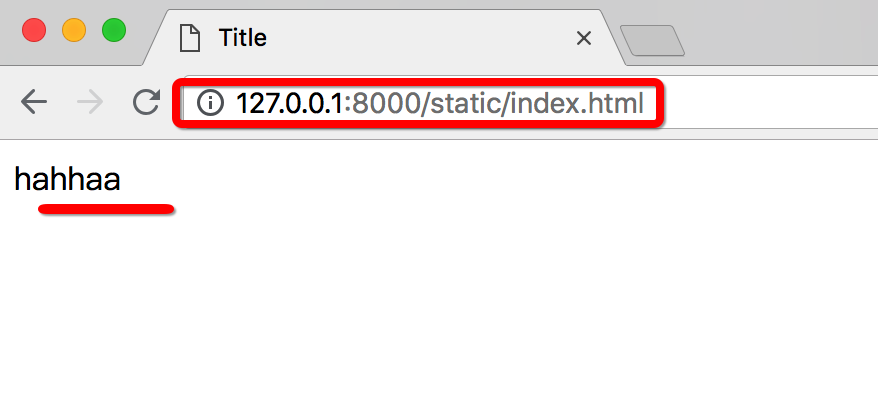

配置、静态文件与路由
a. 配置文件
1. BASE_DIR
当前工程的根目录，Django会依此来定位工程内的相关文件，我们也可以使用该参数来构造文件路径。
BASE_DIR = os.path.dirname(os.path.dirname(os.path.abspath(__file__)))
___file___: 可以理解为当前的文件- os.path.abspath ( 文件 ) : 获取这个文件的绝对路径
- os.path.dirname( 路径 ) : 获取这个路径的上一级路径, 例如:
- path1 = os.path.dirname( 'c://home/setttings.py' )
- 那么获取的结果为: path1 = 'c://home'
- os.path.dirname( 路径 ) : 再次获取这个路径的下一级路径.
- 这样获取到的 BASE_DIR 其实就是当前项目的根目录.
2.DEBUG
设置是否为调试模式，创建工程后初始值为True，即默认工作在调试模式下。
调试模式的作用：
调试模式下django有个简易服务器在监听当前项目, 如果我们修改代码文件，服务器程序会自动重启, 重新加载修改过的文件 ( 方便开发 )
当Django框架程序出现异常时，向前端(浏览器)显示详细的错误追踪信息，例如: ( 方便调试 )


注意：部署线上运行的Django不要运行在调式模式下，记得修改DEBUG=False。
如果为非调试模式:
程序出错后, 浏览器仅显示 500 的错误代码, 不会显示具体的错误信息:

3. 本地语言与时区
Django支持本地化处理，即显示语言与时区支持本地化。
本地化是将显示的语言、时间等使用本地的习惯，这里的本地化就是进行中国化，中国大陆地区使用简体中文，时区使用亚洲/上海时区，注意这里不使用北京时区表示。
初始化的工程默认语言和时区为英语和UTC标准时区
LANGUAGE_CODE = 'en-us' # 语言: 英语
TIME_ZONE = 'UTC' # 时区: 协调世界时，又称世界统一时间、世界标准时间、国际协调时间
将语言和时区修改为中国大陆信息
LANGUAGE_CODE = 'zh-hans'
TIME_ZONE = 'Asia/Shanghai'

注意:
- 这里设置好时间之后, 我们需要把工程中添加的所有路径全部注释掉,才能够看到设置的中文效果生效.
- 如果我们自己添加的路由信息不删除, 则django默认加载用户添加的信息, 进而不加载上面的界面, 换句话说, 如果你设置了路由, 则django不走它内部的默认页面, 而是走我们定义的路由界面,就看不到上面的中文画面了.
b. 静态文件
我们一般会把项目中的CSS、图片、js以及html等看做静态文件。
静态文件我们会放在一个静态(static)文件夹中, 统一管理
我们在html页面中调用时，需要指定静态文件的路径，故, Django中提供了一种用于配置静态文件路径的解析方式。
静态文件可以放在项目根目录下，也可以放在应用的目录下，由于有些静态文件在项目中是通用的，所以推荐放在项目的根目录下，方便管理。
为了提供静态文件访问路径，我们需要在项目的settings.py文件中配置两个参数：
- STATICFILES_DIRS : 存放查找静态文件的目录
- STATIC_URL : 访问静态文件的URL前缀
例如:
1） 在项目根目录下创建static_files目录来保存静态文件。
如图:

2） 在demo/settings.py中修改静态文件的两个参数为
# 这个参数默认存在
STATIC_URL = '/static/'
# 我们可以添加这个参数, 用于补全静态文件路径
STATICFILES_DIRS = [
os.path.join(BASE_DIR, 'static_files'),
]
3）此时在static_files添加的任何静态文件都可以使用网址 /static/文件在static_files中的路径 来访问了。
例如:
我们向static_files目录中添加一个index.html文件，在浏览器中就可以使用127.0.0.1:8000/static/index.html来访问:

或者我们在static_files目录中添加了一个子目录和文件goods/detail.html，在浏览器中就可以使用127.0.0.1:8000/static/goods/detail.html来访问。
注意
Django 仅在调试模式下（DEBUG=True）能对外提供静态文件。
当DEBUG=False工作在生产模式时，Django不再对外提供静态文件，需要是用collectstatic命令来收集静态文件并交由其他静态文件服务器来提供。（详细在部署时会讲）